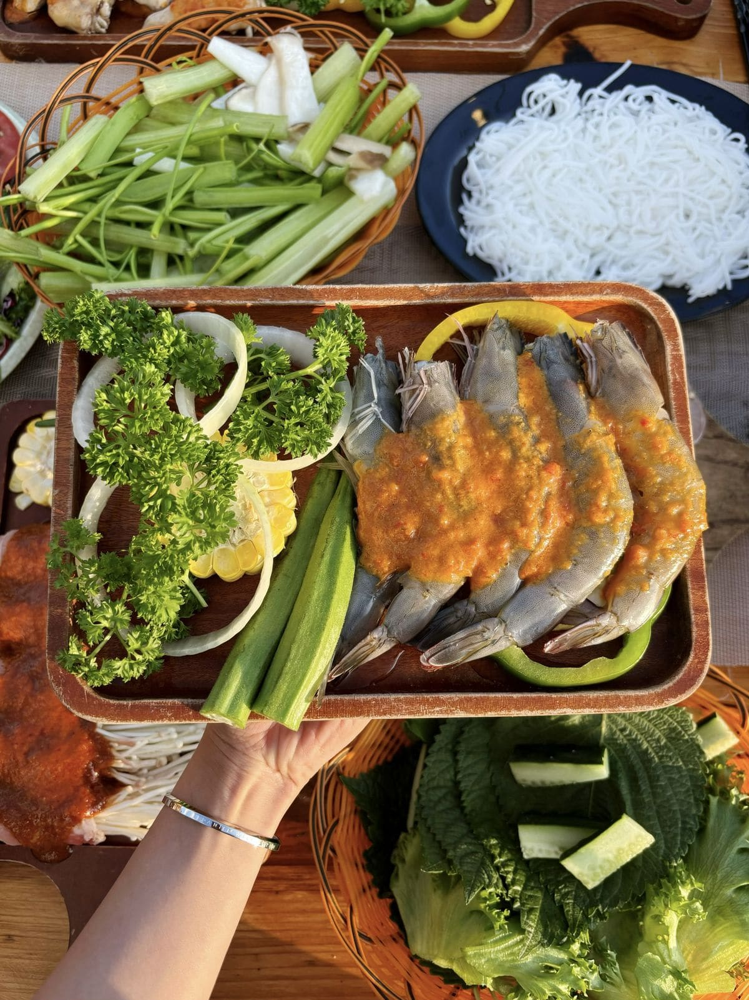

Hải sản tươi ở Đà Lạt — Có thật không?
Nhiều người nghĩ hải sản Đà Lạt không tươi vì xa biển. Thực tế, nhờ logistics hiện đại, nhiều quán nhập hải sản tươi sống hàng ngày từ Phan Thiết, Nha Trang (chỉ 3-4 tiếng xe). Tôm sú, mực, cá, ghẹ — đều tươi roi rói!
Hải sản nướng tại Trạm Dừng Chill
Trạm Dừng Chill nhập hải sản tươi mỗi ngày: tôm sú, mực ống, cá basa, nghêu, sò. Nướng trên than hoa, chấm muối ớt chanh — vị ngọt tự nhiên của hải sản hòa với hương khói than. Set hải sản nướng từ 200K/2 người.


Cách nhận biết hải sản tươi
Tôm: vỏ bóng, thân cứng, không mùi hôi. Mực: màu trắng trong, không nhớt. Cá: mắt trong, mang đỏ tươi, thịt đàn hồi. Quán uy tín sẽ cho bạn xem nguyên liệu trước khi nướng.
Top món hải sản nướng phải thử
Tôm sú nướng muối ớt, mực nướng sa tế, nghêu nướng mỡ hành, cá nướng giấy bạc — mỗi món một vị, ăn cùng rau sống và cơm trắng. Giữa tiết trời mát Đà Lạt, bữa hải sản nướng ngon gấp bội!
Kết luận
Hải sản tươi Đà Lạt hoàn toàn có và rất ngon! Đến Trạm Dừng Chill để thưởng thức hải sản nướng than hoa + view thung lũng. Đặt bàn ngay!